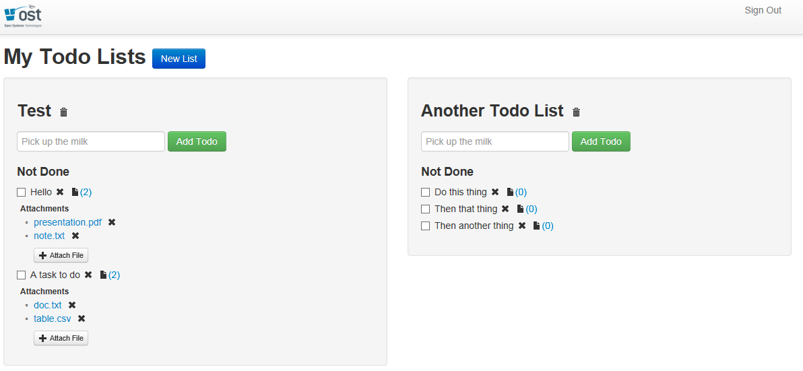
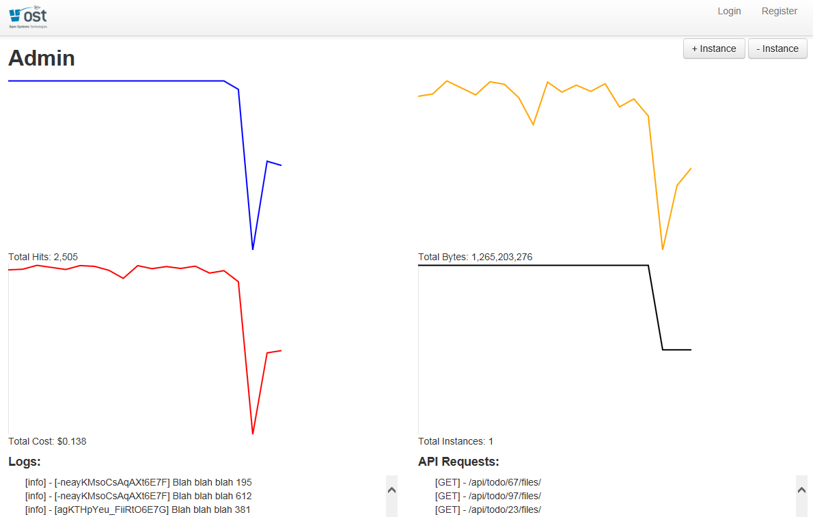

The Happy Path
Migration Strategies for Node.js
Introduction
- What is MEAN? Please relate it to something I know like .NET.
- Why are large companies adopting it?
- Why should you care?
- Show me.
What is MEAN?
- MongoDB
- Express
- Angular
- Node.js
MongoDB
MongoDB (from "humongous") is an open-source document database, and the leading NoSQL database. Written in C++. Key features include:
- Document Oriented Storage (JSON-style documents)
- Full Index Support
- Querying
- Scalable, Replication and High Availability
Microsoft supports MongoDB on Azure and has their own NoSQL document storage services called Tables. Data is accessed through a REST API.
Express
Express is a minimal and flexible node.js web application framework, providing a robust set of features for building single and multi-page, and hybrid web applications.
Think simpler IIS. Did you know that Node can run under IIS using the IISNode module? In IIS you can run one web app that has Node.js, ASP.NET and PHP. This is already integrated into every Azure Website.
Angular
AngularJS fits the definition of a framework the best, even though it's much more lightweight than a typical framework and that's why many confuse it with a library.
Universal framework for building modern web apps that use MVC patterns on the client. Think of the Gmail UX. It is a single page web app. It makes these types of apps possible using professional patterns. We use Angular on almost every web project these days.
Node.js
Node.js is a software platform for scalable server-side and networking applications. Node.js applications are written in JavaScript, and can be run within the Node.js runtime on Windows, Mac OS X and Linux with no changes.
- Node.js = .Net Framework
- Modules = libraries like .Net namespace assemblies
- NPM = package manager like Nuget
Enterprise Process Ready
- Grunt = build tool, think MSBuild
- Jenkins = Continuous Integration, think TeamCity, Bamboo or Cruise Control
- NodeUnit = unit testing, think nUnit, etc.
Companies adopting these technologies
Why should you care?
- One language on the client and server
- It simplifies the layers of an application. For example, you don't need an ORM.
- Why bother with node at all? There's a number of interesting aspects to node as it sits. It uses a very fast JavaScript engine called V8, but more importantly its I/O is asynchronous and event-driven which contrasts with typical synchronous code.
- Better apps with modern UX, faster.
- Async
- It is modern and makes you think in terms of modern web apps
Show me.
The Scenario
- You are a full-stack developer working at the FooFactory.
- The FooFactory has an internal task management system based off OST Todos (ASP.NET MVC 4, AngularJS, ndriven).
- Your boss, BossFoo, is interested in rapidly prototyping new features for the task management system as it is becoming an integral part of the FooFactory's daily operations.
- BossFoo has read about Node.js and is interested in exploring using it to speed up and unify FooFactory's web development stacks.
OST Todos Demo

OST Todos was built for GLSEC 2013.
BossFoo's Requirements
BossFoo wants you to add the following features to the Todos application:
- A document storage and retrieval system where users can attach documents to their tasks.
- An admin interface that can monitor the system in real-time to show its load and operational costs.
Your Constraints
However, you are constrained by the following criteria:
- BossFoo is under a time and budget crunch to get these features implemented and would prefer to see a prototype of how it will work before he invests in big hardware to run it full time.
- There is no short-term budget for dedicated hardware or storage until it has been proven to work, so an on-demand infrastructure-as-a-service (IaaS) should be used.
- The prototype has to integrate seamlessly into the existing Todos application.
The Path to Node.js
You carefully consider what you will need to prototype the new features:
- A document storage system that will scale gracefully as usage increases.
- A new API that allows for document listing, creation, retrieval and deletion.
- An update to the Todos AngularJS application that will integrate with the new API.
Document Storage
Since you have no hardware budget, you choose to use Amazon S3, a cloud-based file system that scales seamlessly.
API - The Contenders
There are at least two stacks you could use to build the API:
- C# / ASP.net MVC: Extend the existing MVC app, add data models, build a new API, integrate with S3, update the AngularJS UI.
- Node.js: Add a new Node.js API server, have it integrate with S3, update the AngularJS UI.
What is Node.js?
Node.js is:
- Written in JavaScript, using Google's V8 runtime.
- A dynamic runtime language, which makes rapid prototyping a breeze.
- Event-driven, asynchronous, single threaded and non-blocking, which makes it able to scale more efficiently than thread-per-connection models (eg. ASP).
- Compatible with many existing JavaScript frameworks: underscore, lodash, async, Q, etc.
- A large community with a lot of active development.
- Production-ready: Used by LinkedIn, eBay, Yahoo, Walmart and more. Supported by Microsoft (Visual Studio and Azure).
API - And The Winner Is...
You choose Node.js build your prototype of the new features for BooFoo. Why?
- Node.js code is JavaScript, so your front-end developers will feel right at home writing back-end code.
- Node.js is great for prototyping since there is no build process, JavaScript is a dynamic language, server and client code look the same, etc.
- Interacting with Amazon S3 introduces a high latency link. The non-blocking nature of Node.js makes it easier to scale in an environment where client connections may be active for many seconds while files are uploaded or downloaded from S3.
- Node.js and Socket.IO make it easy to build real-time applications.
Phase 1: Building the API
Goal: Create a Node.js API server that interacts with Amazon S3, and update the AngularJS UI to associate documents with tasks
Phase 1: Steps
-
Bootstrap an express project:
node_modules/express/bin/express node-server - Add a few simple REST routes for document creating, listing, retrieval and removal.
-
Integrate with Amazon's SDK for JavaScript:
npm install aws-sdk - Hook your new node server into IIS server using iisnode.
Phase 1: Basic Code Layout
Check out the code on Github.
app.js: Used to run the server:node app.jsaws.js: Handles Amazon AWS (S3) interactionsconstants.js: Environment constantshttp-server.js: HTTP server coderoutes.js: REST API routescontrollers/: REST controllers
Phase 1: REST API
We want to create the following REST API routes:
GET /api/todo/:id/files
Get all of the file names for a todoGET /api/todo/:id/file/:name
Get a specific fileDELETE /api/todo/:id/file/:name
Delete a specific filePOST /api/todo/:id/files
Upload (overwrite) a file
Phase 1: Code
// imports
var http = require('http'), fs = require('fs'),
express = require('express'), AWS = require('aws-sdk');
// configure AWS
AWS.config.loadFromPath('./aws.json');
var s3 = new AWS.S3();
// startup the HTTP server
app = express();
var httpServer = http.createServer(app);
httpServer.listen(8080);
// one of the routes
app.get('/api/todo/:id/files/:name', function(req, res) {
s3.getObject({
Bucket: 'glsec-2014',
Key: 'todos/' + req.params.id + '/' + req.params.name + '.txt'
}, function(err, data) {
if (err || !data) { return res.send(500, err); }
var buff = new Buffer(data.Body, "binary");
res.send(buff);
});
});
This is a simplified (but runnable) version of the code.
Phase 1: Demo
Phase 1: Review
Phase 1:
- Node.js LOC: 292
- Development time: 6 hours
Phase 2: Building the Admin Interface
Goal: Create an Admin interface so the system can be monitored in real-time.
Phase 2: Steps
Phase 2: Code
// ... continued from Phase 1 server code ...
var socketIo = require('socket.io');
var sockets = [];
io = socketIo.listen(httpServer);
io.sockets.on('connection', function(socket) {
sockets.push(socket);
socket.emit('log', { msg: 'Hello' });
});
<script src="socket.io.js"></script>
<script>
// ... AngularJS client code ...
var socket = io.connect('http://api.foofactory.net');
socket.on('log', function (data) {
// log message
});
</script>
This is a simplified (but runnable) version of the code.
Phase 2: Demo

Phase 2: Review
Phase 2:
- Node.js LOC: 127
- Development time: 6 hours
Total:
- Node.js LOC: 419
- Development time: 10 hours
Phase 3: Scaling
Goal: Allow the system to be easily scaled by Admins.
Phase 3: Steps
- Add buttons for Admins to increase or decrease the number of Node.js API server instances.
- Add a new controller that will manage Amazon EC2 or Azure Node.js load-balanced instances.
- Allow Admins to monitor the number of instances.
- Have all Node.js API server instances communicate with the master server, sending stats, logs and API hits in real-time.
For this phase, we created mock instances that pretend to see user activity.
Phase 3: Code
// ... continued from Phase 2 server code ...
// collect log events from other server instances
socket.on('log', function(data) {
// repeat log to all Admin clients
for (var i = 0; i < sockets.length; i++) {
sockets[i].emit('log', data);
}
});
// workerInstance.js: Server instances also connect
// to master API server via Socket.IO
var socketIoClient = require('socket.io-client');
var io = socketIoClient.connect('http://api.foofactory.net');
client.on('connect', function() {
client.emit('log', { msg: 'I connected' });
});
This is a simplified version of the code.
Phase 3: Demo
Phase 3: Review
Phase 3:
- Node.js LOC: 108
- Development time: 4 hours
Total:
- Node.js LOC: 527
- Development time: 14 hours
Phase 4: Rewriting the ASP.net MVC API
Goal: For comparison, migrate all of the existing ASP.net MVC API to Node.js.
Phase 4: Steps
- Create a new REST API in the Node.js server that mimics the ASP.NET MVC REST API.
- Use a NoSQL solution such as MongoDB for todo storage.
Phase 4: REST API
We want to migrate the following REST APIs to Node.js:
GET /api/todolist/:id/todos: Get todos for a listPOST /api/todolist/:id/todos: Post a todo to a listGET /api/todolists: Get all of the todos for the userGET /api/todolist/:id: Get a specific todolistDELETE /api/todolist/:id: Deletes a specific todolistPOST /api/todolist: Creates a todolist
Phase 4: Code: Data Model
// todolist.js
var mongoose = require('mongoose');
var todoSchema = mongoose.Schema({
Title: String,
Completed: Boolean
});
var todoListSchema = mongoose.Schema({
Name: String,
OwnerId: String,
Todos: [todoSchema]
});
// CommonJS exports
exports.Todo = mongoose.model('Todo', todoSchema);
exports.TodoList = mongoose.model('TodoList', todoListSchema);
Phase 4: Code: Controller
var TodoList = require('./todolist').TodoList;
app.get('/api/todolists', function(req, res) {
var userId = req.get('userId');
// MongoDB / Mongoose ORM
TodoList.find({ OwnerId: userId }, function(err, lists) {
if (err) {
return res.send(500, err);
}
if (!lists) {
return res.send(404);
}
var displayLists = _.map(lists, function(l) {
return l.serialize();
});
return res.send(displayLists);
});
});
This is a simplified version of the code.
Phase 4: Demo
This should look the same as Phase 2 :)
Phase 4: Review
Phase 3:
- Node.js LOC: 102
- Related ASP.net MVC LOC: 248
- Development time: TODO hours
Total:
- Node.js LOC: 725
- Development time: TODO hours
Migration Strategies
- Start small: Consider implementing a small new feature in Node.js before you decide what parts of your architecture make sense to use Node.js.
- Learn to love prototyping: Node is great for quickly experimenting on new features. Prototype first before engineering a fully-baked solution.
- Consider the hardware costs: While Node.js can scale efficiently in many circumstances, maintaining hardware that is running separate IIS (or apache) and Node.js instances will be more complicated.
Migration Strategies Part 2
- Hook Node.js into IIS: Consider using iisnode to easily hook Node.js into your IIS server instead of adding a separate Node.js server.
- Use it for its' strengths: Node.js is great for scaling. Use it for REST APIs, real-time servers and other stateless applications that may need to scale in the future.
Closing
Links: